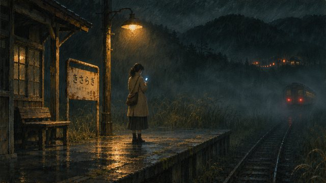
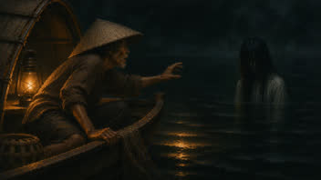
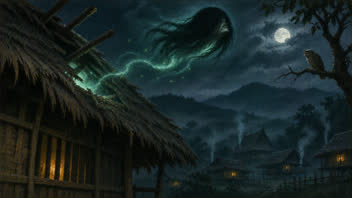
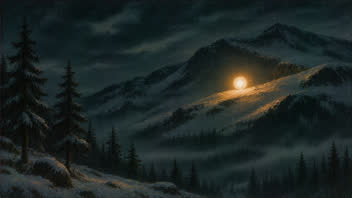

Nửa Đêm cho Người LườiMidnight for Lazy Souls

00:00. Đèn tắt. Nằm yên. Và đừng nhìn ra cửa sổ.Lights out. Lie still. And don't look out the window.
🔞 Nội dung chỉ dành cho người trưởng thànhFor adult audiences onlyVề kênhAbout the channel
Có những bí mật chỉ dám cất tiếng khi thành phố đã ngủ say. Nửa Đêm cho Người Lười đưa bạn bước vào vùng ranh giới mờ ảo của những truyền thuyết dân gian, các hiện tượng siêu nhiên không lời giải và những lời đồn đại rợn tóc gáy, từ Việt Nam đến khắp thế giới.
Bạn không cần tự mình lật giở hàng trăm trang tài liệu cũ kỹ. Chỉ cần thả lỏng, nhắm mắt lại, cả thế giới bóng tối sẽ tự tìm đến bạn qua:
- Những thước tranh sơn dầu chuyển động: từng nét cọ u tối kể lại câu chuyện một cách sống động và ám ảnh.
- Góc khuất “Người ta biết gì”: bóc tách nguồn gốc, giả thuyết và những tư liệu lịch sử có thật đằng sau mỗi lời đồn. Mọi nguồn tham khảo đều ghi dưới phần mô tả video.
Không máu me. Không tội ác giật gân. Chỉ có sương mù, những khoảng lặng lạnh gáy và sự thật bị chôn vùi chờ người đủ can đảm lắng nghe.
🕛 Cánh cửa mở ra vào đúng 00:00 (giờ Việt Nam).
Some secrets only dare to speak once the city is fast asleep. Midnight for Lazy Souls takes you into the blurred borderland of folk legends, unexplained supernatural phenomena and the most chilling rumours, from Vietnam to every corner of the world.
You don't have to dig through hundreds of dusty pages yourself. Just relax, close your eyes, and let the dark come to you through:
- Moving oil paintings: every shadowy brushstroke tells the story, vivid and haunting.
- “What we actually know”: the origins, theories and real historical records behind each rumour. Every source is listed in the video description.
No gore. No sensational crime. Just fog, cold silences and buried truths waiting for someone brave enough to listen.
🕛 The door opens at exactly 00:00 (Vietnam time). Episodes are narrated in Vietnamese.
Các tậpEpisodes
- Tập 1Ep. 1Ga Kisaragi: Nhà ga không có trên bản đồKisaragi Station: the station on no map
Đêm 8/1/2004, một cô gái tên Hasumi lên chuyến tàu quen thuộc về nhà. Tàu cứ chạy mãi không dừng, rồi dừng ở một ga không người, không có trên bất kỳ bản đồ nào.
On the night of 8 January 2004, a young woman called Hasumi boards her usual train home. It runs on and on without stopping, then halts at an empty station that appears on no map.
▶ Xem trên YouTubeWatch on YouTube
- Tập 2Ep. 2Quỷ Nhập Tràng: Đừng để mèo nhảy quaQuỷ Nhập Tràng: never let the cat leap over
Ở làng quê Việt, khi nhà có tang, người ta canh không cho con mèo nào lại gần. Vì dân gian tin: nếu mèo nhảy qua người vừa mất, thứ gì đó sẽ nhập vào và ngồi dậy.
In Vietnamese villages, a house in mourning keeps every cat away from the coffin. Folk belief says that if a cat leaps over the newly dead, something will enter the body and sit up.
▶ Xem trên YouTubeWatch on YouTube
- Tập 3Ep. 3Hai Đứa Trẻ Xanh ở WoolpitThe Green Children of Woolpit
Một mùa gặt ở làng Woolpit, nước Anh, dân làng thấy hai đứa trẻ bước ra từ hố bẫy sói. Da chúng màu xanh lá. Chúng nói thứ tiếng không ai hiểu, và chỉ chịu ăn đậu.
One harvest in the English village of Woolpit, villagers find two children by a wolf pit. Their skin is green, they speak a language no one understands, and they will eat nothing but beans.
- 🔗 Green children of Woolpit (Wikipedia)
- 📖 William of Newburgh (c. 1189), Ralph of Coggeshall (c. 1220)

- Tập 4Ep. 4Ma Da: Khúc sông năm nào cũng có người mấtMa Da: the river bend that takes someone every year
“Đừng có tắm trưa. Ma da nó kéo chân đấy.” Ở làng ven sông, có những khúc nước hiền như ao làng mà năm nào cũng có người không trở lên bờ, và người già bảo dưới đó có thứ đang chờ người thế mạng.
“Don’t swim at noon, the ma da will pull your legs.” In riverside villages there are calm bends where every year someone never comes back up, and the elders say something down there is waiting for a replacement.
▶ Xem trên YouTubeWatch on YouTube
- Tập 5Ep. 5Mary Celeste: Con tàu ma không một bóng ngườiMary Celeste: the ghost ship with no one aboard
Ngày 4/12/1872, giữa Đại Tây Dương, người ta bắt gặp một con tàu trôi dạt: buồm còn căng, hàng hoá nguyên vẹn, đồ đạc vẫn ngay ngắn. Chỉ thiếu một chiếc xuồng cứu sinh… và mười con người.
On 4 December 1872, in the middle of the Atlantic, a ship is found drifting: sails partly set, cargo intact, belongings neatly in place. Only a lifeboat is missing… and all ten people aboard.
- Tập 6Ep. 6Ma Lai: Cái đầu bay đi lúc nửa đêmMa Lai: the head that flies at midnight
Hễ chim lợn kêu khàn khàn trên mái nhà ai, người già tin rằng đêm ấy có một thứ đang cưỡi trên lưng nó: chỉ có cái đầu, tóc xoã rối, bên dưới lủng lẳng bộ ruột phát sáng lờ mờ. Ban ngày, nó là một người hàng xóm hiền lành.
When a barn owl screeches over a roof, the elders believe something rides on its back: only a head with tangled hair and glowing entrails trailing below. By day, it is a gentle neighbour.

- Tập 7Ep. 7Ánh sáng Hessdalen: Thung lũng bị theo dõiThe Hessdalen Lights: the watched valley
Tháng 12/1981, ở một thung lũng hẻo lánh giữa núi Na Uy, những đốm sáng lạ bắt đầu xuất hiện: lơ lửng, đứng yên, rồi vụt đi nhanh hơn bất kỳ cỗ máy nào. Hơn bốn mươi năm sau, vẫn chưa ai nói chắc được chúng là gì.
In December 1981, in a remote Norwegian valley, strange lights begin to appear: hovering, standing still, then shooting off faster than any machine. Over forty years later, no one can say for sure what they are.

- Sắp tớiNextKuchisake-onna: Người phụ nữ đeo khẩu trangKuchisake-onna: the woman in the mask
Trên con đường vắng lúc chạng vạng, một người phụ nữ cao, đeo khẩu trang trắng chặn bạn lại và hỏi: “Tôi có đẹp không?”. Trả lời thế nào cũng sai.
On an empty road at dusk, a tall woman in a white mask stops you and asks: “Am I beautiful?” There is no right answer.
- Sắp tớiNextBóng đè: Có ai đang ngồi trên ngực bạnSleep paralysis: someone is sitting on your chest
Bạn tỉnh dậy giữa đêm, mắt mở được nhưng tay chân không nhúc nhích. Ngực nặng trĩu như có ai ngồi lên. Và ở góc phòng, có một cái bóng đang nhìn bạn.
You wake in the night. Your eyes open, but you cannot move. Your chest is heavy, as if someone is sitting on it. And in the corner of the room, a shadow is watching you.
- Sắp tớiNextĐèo Dyatlov: Chín người bỏ lều chạy vào tuyếtThe Dyatlov Pass: nine hikers who fled into the snow
Đêm 1/2/1959, chín người leo núi giàu kinh nghiệm rạch lều từ bên trong rồi lao ra sườn núi tuyết, nhiều người gần như không mặc gì. Không ai sống sót để kể lại điều gì khiến họ bỏ chạy.
On the night of 1 February 1959, nine experienced hikers slashed their tent open from the inside and ran out onto the snowy slope, several barely dressed. No one survived to tell what made them flee.
- Sắp tớiNextTháng Cô Hồn: Khi cửa âm mởGhost Month: when the gates of the dead open
Cứ đến tháng 7 âm lịch, người Việt lại dặn nhau đừng đi đêm, đừng phơi đồ qua đêm, đừng gọi tên nhau ngoài đường, vì đó là tháng những vong hồn không nơi nương tựa lên trần gian.
Every seventh lunar month, Vietnamese families warn each other not to go out at night, not to leave laundry out, not to call names in the street: it is the month the wandering dead return.
- Sắp tớiNextDịch nhảy múa Strasbourg: Mùa hè cả phố không ngừng nhảyThe Strasbourg dancing plague: the summer a city could not stop dancing
Tháng 7/1518, một phụ nữ tên Troffea bước ra phố và bắt đầu nhảy. Bà không dừng lại được. Vài tuần sau, hàng chục rồi hàng trăm người nhảy theo giữa cái nắng mùa hè.
In July 1518, a woman named Troffea stepped into the street and began to dance. She could not stop. Within weeks, dozens and then hundreds were dancing with her in the summer heat.
- Sắp tớiNextNgọn hải đăng Flannan: Ba người gác đèn biến mấtThe Flannan Isles lighthouse: three keepers who vanished
Tháng 12/1900, tàu tiếp tế cập hòn đảo nhỏ ngoài khơi Scotland. Ngọn hải đăng vẫn đứng đó, nhưng không ai ra đón. Ba người gác đèn đã biến mất, và không ai tìm thấy họ nữa.
In December 1900, a relief ship reached a small island off Scotland. The lighthouse stood there, but no one came out. The three keepers had vanished and were never found.
- Sắp tớiNextRừng Hoia-Baciu: Khu rừng nuốt ngườiHoia-Baciu: the forest that swallows people
Ở rìa thành phố Cluj có một khu rừng cây cối cong vẹo, giữa rừng là một khoảng đất tròn không cây nào mọc. Người ta kể có người chăn cừu dắt cả đàn vào rừng rồi không bao giờ trở ra.
On the edge of Cluj lies a forest of twisted trees around a round clearing where nothing grows. They say a shepherd once led his whole flock in and never came out.
- Sắp tớiNextTiếng ù Taos: Âm thanh chỉ một số người nghe thấyThe Taos Hum: a sound only some can hear
Ở thị trấn sa mạc Taos, có những người mất ngủ vì một tiếng rì rầm trầm đục suốt đêm, như động cơ ở rất xa. Người nằm ngay cạnh họ lại không nghe thấy gì.
In the desert town of Taos, some people cannot sleep for a low rumble all night, like a distant engine. The person lying next to them hears nothing.
Cách chúng tôi làmHow we make it
- Mỗi tập dựa trên truyền thuyết, ghi chép lịch sử hoặc tài liệu có nguồn, nguồn ghi đầy đủ trong mô tả video.
- Giữ nguyên những chi tiết rợn của nguyên tác, không làm dịu câu chuyện, nhưng không có máu me hay cảnh bạo lực.
- Tranh minh hoạ do studio tạo theo phong cách sơn dầu riêng của kênh; video có sử dụng AI, kể cả giọng kể.
- Every episode is based on documented legends, historical records or sourced material, all listed in the video description.
- We keep the eerie details of the original story without softening it, but there is no gore or graphic violence.
- Illustrations are created by the studio in the channel's own oil-painting style; videos are made with the help of AI, including the narration voice.